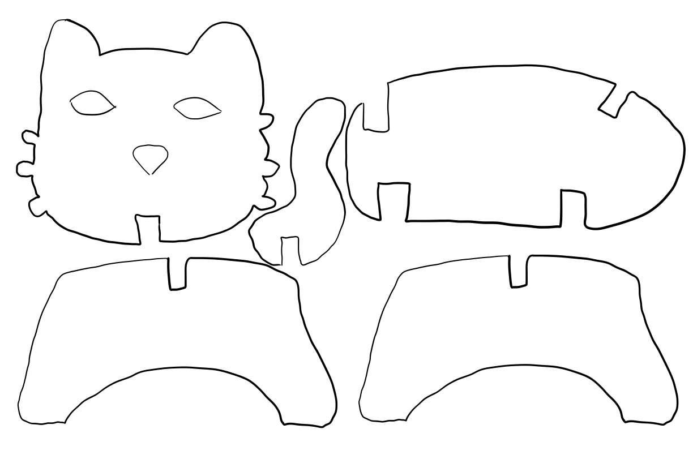
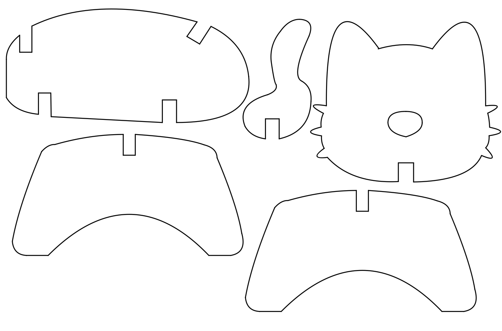
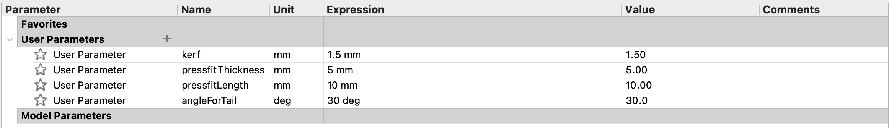
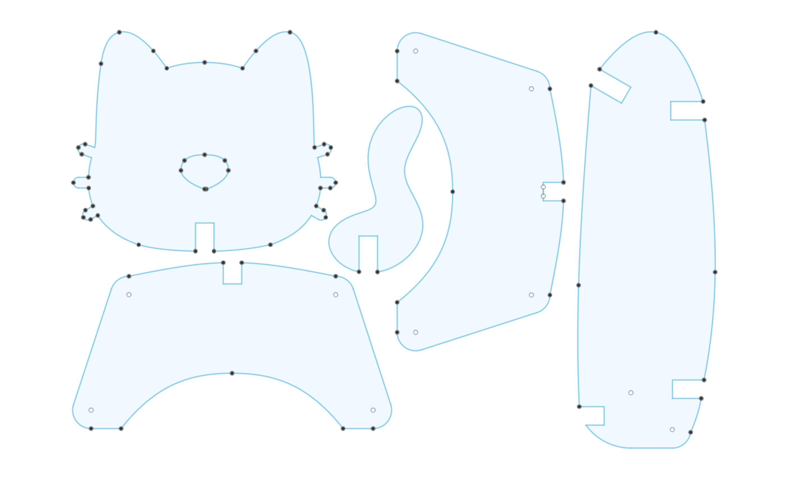
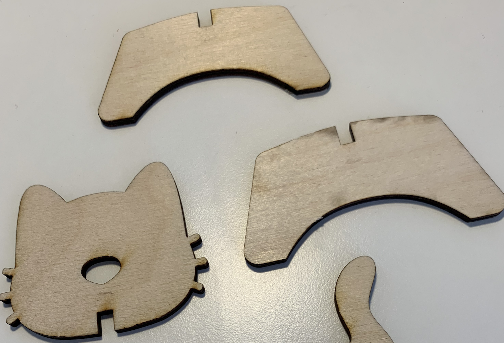
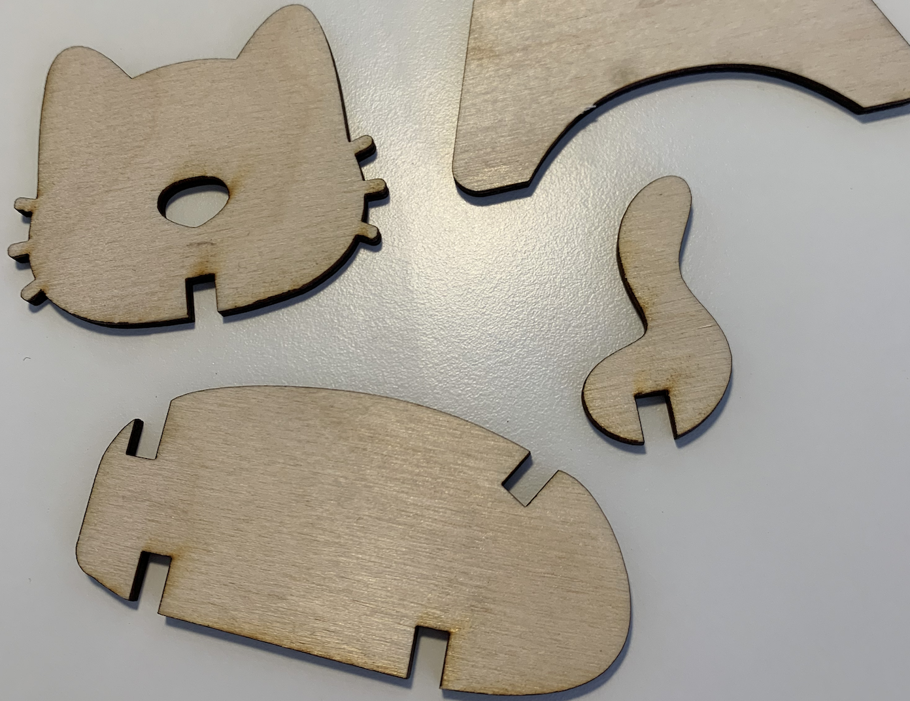

Verkefni 2 — Tölvustuddur skurður

Hópaverkefnið
Partur af verkefninu snerist um það að vera 3 saman að vinna í hóp, og sem hópur velja geislaskera og ákvarða með prófunum kerf fyrir þann skera. Hópurinn okkar samanstendur af mér, Jóni Lárusi og Sólveigu. Við skjalfestum hópaverkefnið með þessu frábæra myndbandi:
Einstaklingsverkefnið
Verkefnalýsing
Markmið verkefnis 2 í VÉL403G var að hanna parametrískt, geirneglt módel af byggingareiningum. Módelið þurfti að vera skalanlegt þannig hægt væri að stilla kerf og efnisþykkt, ásamt stærðum á flötum. Hægt var að velja um þrjár mismunandi gerðir af efni; birkikrossvið, akríl eða pappa.
Kötturinn
Eftir mikla hugsun og eftir að hafa tekið eftir því hversu hugmyndasnauður ég er þegar kemur að því að hanna eitthvað sem gæti verið nytsamlegt ákvað ég á endanum að teikna upp einhvers konar kattarkvikindi sem ég gæti sett saman (þ.e.a.s. eitthvað sem er ekki nytsamlegt fyrir utan að vera skemmtilegt að horfa á). Ég eyddi smá tíma á netinu að finna svipaðar hugmyndir, t.d. pressfit dýr eða eitthvað álíka. Ég fór svo í iPadinn og teiknaði upp mjög rough draft að því hvernig bitarnir úr kisunni ættu að líta út:

Að sjálfsögðu þurfti ég síðan að hreinsa þetta til og náði ég því að einhverju leyti með einhverjum trixum í Notability appinu í iPadinum:

Eftir þetta lá vegurinn til Fusion 360.
Tölvuteikning með Fusion 360
Ég byrjaði einfaldlega á því að opna Fusion og ýta á create sketch. Svo valdi ég Modify flipann og ýtti á Change Parameters. Þar setti ég inn Kerf og ákvað ég að hafa það sem 0,15 mm. Þar að auki bætti ég inn fleiri parametrum til þess að hafa verkefnið parametrískt eins og beðið er um:

Eftir það teiknaði ég svo kisuna í Fusion og leit hún svona út:

Eftir þetta valdi ég hvern hluta af kisunni og smellti á Offset. Þegar beðið var um hversu mikið ég vildi offsetta sketchið setti ég kerf/2 þannig að sketchið varð offsettað um 0,075 mm, þannig að ég myndi vinna á móti laser skeranum vegna þess að hann myndi einmitt eyða út u.þ.b. 0,15mm af efninu. Svo eyddi ég út innri sketsinum og þá var kötturinn tilbúinn í Inkscape með því að ýta á Save as DXF. Í Inkscape þurfti svo að fara eftir eftirfarandi skrefum:
1. DXF skráin opnuð í Inkscape.
2. Teikningunni breytt í vigurskrá og línuþykktir stilltar fyrir skurðinn.
3. Skráin vistuð á viðeigandi formi, PDF, og færð yfir á skerann í gegnum USB lykil eða skýið.
4. Geislaskerinn undirbúinn fyrir skurð; núllstilling á sér stað og efnið sem á að skera út er sett rétt í skerann.
5. Geislaskerinn fer í gang og hluturinn er svo settur saman að lokum.
Tilbúinn köttur
Þá var kötturinn tilbúinn. Hann var smá wonky vegna þess að ég var ekki búinn að fullkomna mælingar á geirneglingunni, þannig að kötturinn var smá valtur en hann gat alveg staðið sjálfur og að mínu mati gerði það hann í rauninni bara krúttlegri eins og sést á þessum myndum:




Tímaskráning
Talsverður tími fór í að klára þetta verkefni en tímaskráningin er eins og stendur:
20. febrúar: 4 tímar í FabLab að læra á skerann, fikta í Fusion, ákveða parametra o.fl.
24. febrúar: 5 tímar í FabLab að lagfæra teikninguna, skera hana út o.fl.
3. mars: 2 tímar í FabLab að lagfæra teikningu.
7. mars: 2,5 tímar í vefsíðugerð og breytingum.
8. mars: 3 tímar í lokaskrefum á verkefninu.